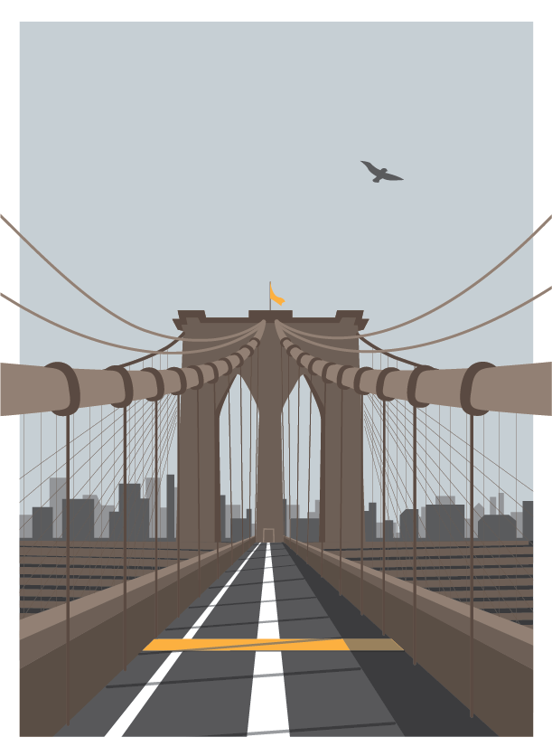
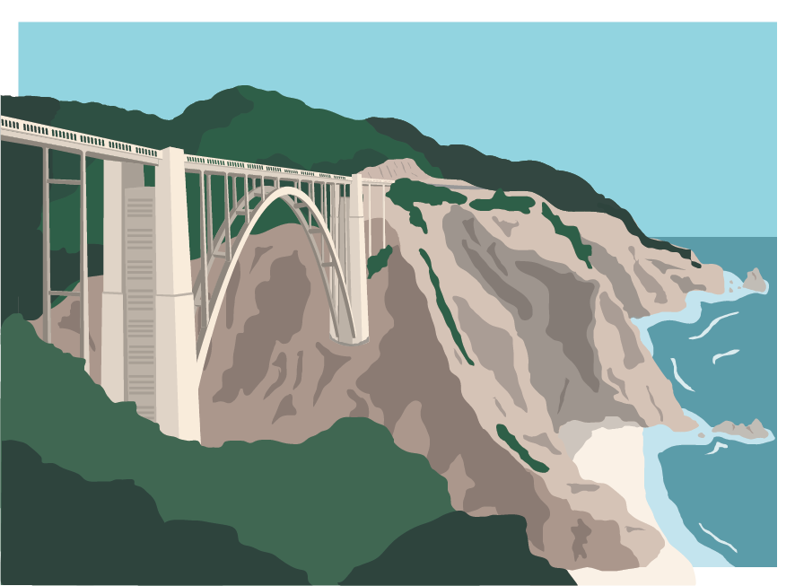
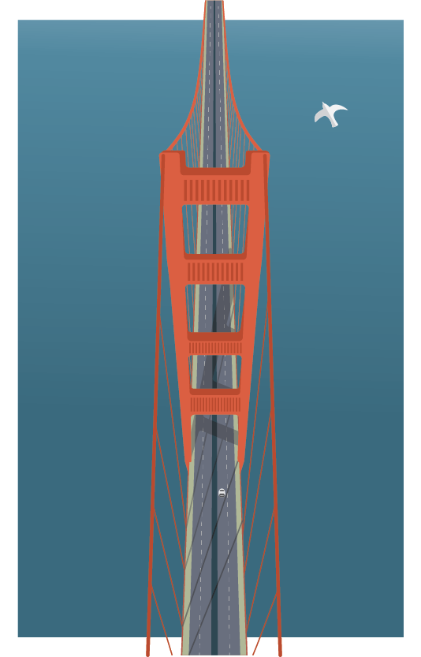
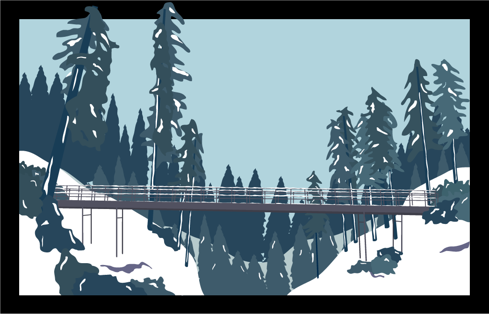
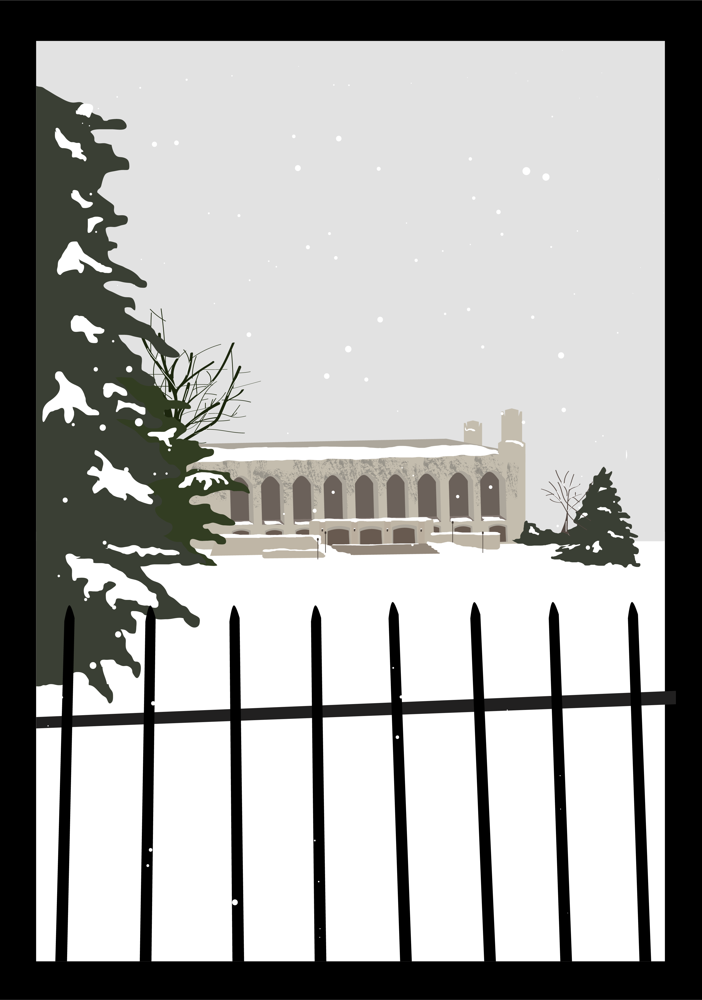
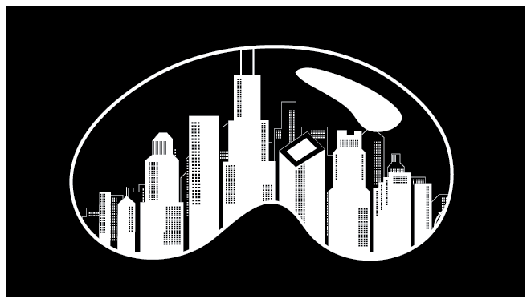
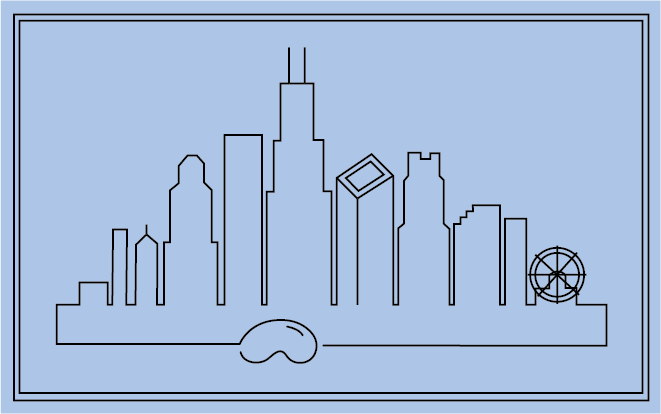
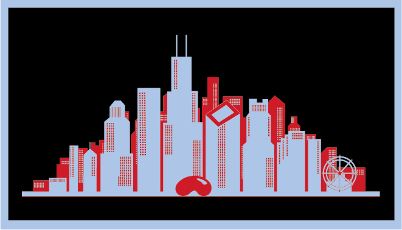
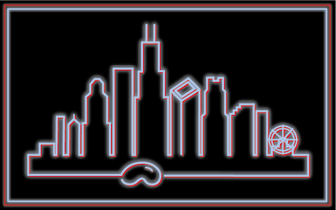

GRAPHICS
POSTCARDS
I've always loved the WPA-style national parks posters, especially the Golden Gate National Parks series done by Michael Schwab. Those pieces and art-deco styles serve as my inspiration for these postcards--I've used some of these as Christmas cards for my family!





SKYLINES
I've also had a lot of fun illustrating and incorporating skylines into my graphics--I've been especially inspired by Chicago and DC, my two primary cities of residence!
   